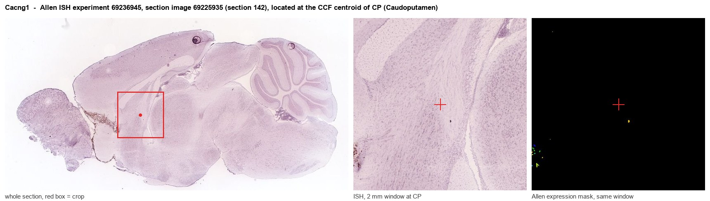
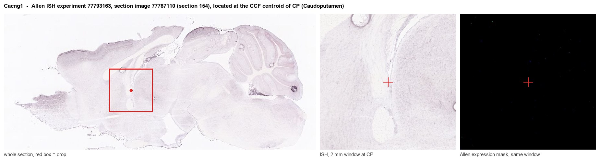
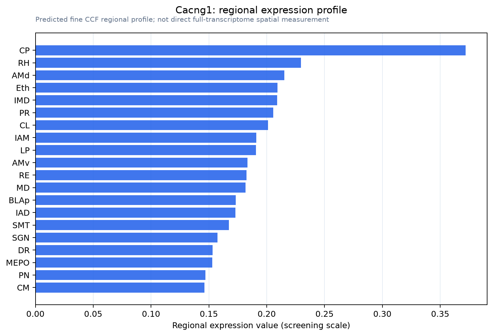

Cacng1
Voltage-dependent calcium channel gamma-1 subunit (Dihydropyridine-sensitive L-type, skeletal muscle calcium channel subunit gamma)
Spatial tier: RESTRICTED · Class: ION_CHANNEL · Top region: CP (Caudoputamen) · Positive regions: 24/554
Function in CP: evidence, prediction, innovation
- Gene function
- CACNG1 encodes the gamma-1 subunit of the skeletal-muscle L-type (dihydropyridine-receptor) calcium channel. It is a four-transmembrane auxiliary subunit that acts as an endogenous calcium antagonist, accelerating inactivation and shifting the steady-state inactivation of CaV1.1 to more negative potentials. It is the founding member of the gamma-subunit family from which the brain TARPs (CACNG2-8, stargazin and relatives) that traffic AMPA receptors were named, but gamma-1 itself has no established TARP activity.
- Region function
- The caudoputamen is the dorsal striatum: GABAergic D1 direct-pathway and D2 indirect-pathway spiny projection neurons receive massive cortical glutamate and nigral dopamine and control action selection, habit formation and motor vigour.
- Published in this region
- inferred No region-specific literature found. Gamma-1 is characterised only in skeletal muscle (Arikkath et al. 2003; Andronache et al. 2007), and the gamma-subunit gene-family surveys that established brain expression patterns (Burgess et al. 1999, 2001) assign striatal and forebrain expression to the TARP members gamma-2, gamma-3, gamma-4, gamma-7 and gamma-8 rather than to gamma-1.
- Predicted function
- Prediction: if gamma-1 protein really is present in caudoputamen it would most plausibly act, as it does in muscle, as a brake on L-type calcium channels - here CaV1.2/CaV1.3 in spiny projection neurons - damping dendritic calcium entry and the L-type-dependent component of dopamine-driven plasticity. Striatal Cacng1 deletion is predicted to increase L-type calcium current and enhance LTP at corticostriatal synapses, producing exaggerated psychostimulant-induced locomotor sensitisation; the phenotype should be occluded by the L-type blocker isradipine. This prediction carries a strong caveat that the mapped signal may be a cross-hybridisation or low-level artefact.
- Innovation
- ★★★☆☆ 3/5 Nothing is published on gamma-1 in striatum and tools exist, but the low biological plausibility of a skeletal-muscle-restricted subunit in spiny neurons limits the expected payoff.
- Tools
- Cacng1 knockout mice (viable, characterised in muscle physiology); IMPC Cacng1 alleles; dihydropyridines nifedipine, isradipine and Bay K 8644 to manipulate the partner channel; anti-CACNG1 antibodies; Drd1-Cre and Adora2a-Cre for pathway-specific striatal deletion.
- References
Direct evidence located at the region

Allen ISH experiment 69236945, section image 69225935 (section 142): the section that contains the CCF centroid of Caudoputamen according to the Allen image-to-atlas alignment (reference_to_image), with a 2 mm window around that point. Left: whole section, red box = window. Middle: ISH signal. Right: Allen's expression-mask view of the same window. open this image in the Allen viewer

Allen ISH experiment 77793163, section image 77787110 (section 154): the section that contains the CCF centroid of Caudoputamen according to the Allen image-to-atlas alignment (reference_to_image), with a 2 mm window around that point. Left: whole section, red box = window. Middle: ISH signal. Right: Allen's expression-mask view of the same window. open this image in the Allen viewer
Direct spatial evidence

Regional expression figure

Predicted WMB × fine-CCF profile; not direct full-transcriptome spatial measurement.
Spatial profile
Evidence and specificity
- Evidence status
- PREDICTED_FINE
- Direct sources
- None; predicted localization only
- Exclusive threshold
- 12 positive regions out of 554
- Spatial specificity
- 0.313
- Top-region fraction
- 0.064
- Filter status
- PASS
Interpretation limits
- Cell-type-to-region projection is imputed expression, not direct spatial measurement.
- Adult reference atlases do not establish stability across age, sex, strain, state, or disease.
- Transcript abundance does not guarantee protein abundance or genetic-tool performance.